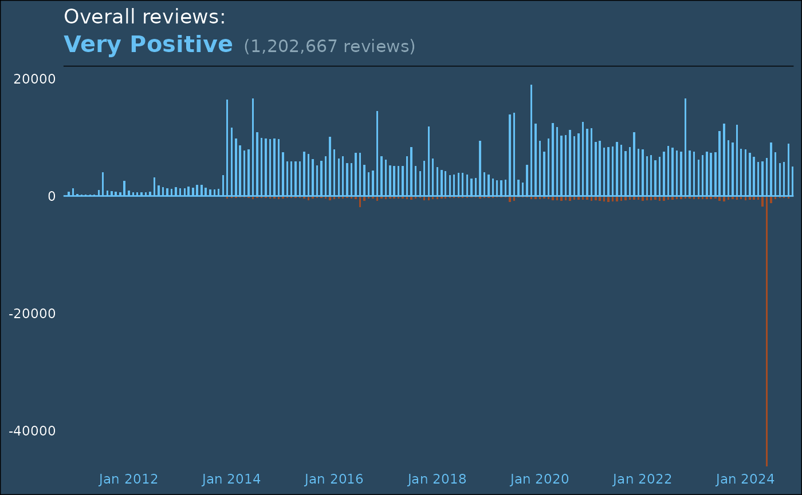

steamr.Rmd
library(steamr)
library(tidyr)
library(dplyr)
#>
#> Attaching package: 'dplyr'
#> The following objects are masked from 'package:stats':
#>
#> filter, lag
#> The following objects are masked from 'package:base':
#>
#> intersect, setdiff, setequal, union
library(ggplot2)
library(ggtext)
histo <- stf_review_histogram("440", language = NULL, review_score_preference = 2)
rollups <- histo$rollups %>%
mutate(recommendations_down = recommendations_down * -1) %>%
pivot_longer(
cols = starts_with("rec"),
names_prefix = "recommendations_",
names_to = "vote"
)
ggplot(rollups) +
aes(x = date, y = value, fill = vote) +
geom_bar(stat = "identity", show.legend = FALSE, width = resolution(as.double(rollups$date) * 0.5)) +
geom_hline(yintercept = 0, color = "#66c0f4") +
scale_x_datetime(date_breaks = "2 years", date_labels = "%b %Y", expand = c(0, 0)) +
scale_y_continuous(expand = expansion(mult = c(0, 0.05))) +
scale_fill_manual(values = c(up = "#66c0f4", down = "#a34c25")) +
labs(
title = "Overall reviews:",
subtitle = sprintf(
"<b style='color:#66c0f4;font-size:20px;text-shadow:8px 8px 16px #000000aa;font-weight:bold'>Very Positive</b> <span style='color:#8ba6b6;font-size:15px'>(%s reviews)</span>",
format(sum(abs(rollups$value)), big.mark = ",")
),
x = NULL,
y = NULL
) +
theme_minimal() +
annotate(geom = "segment", y = as.POSIXct(Inf), yend = as.POSIXct(Inf), x = as.POSIXct(-Inf), xend = as.POSIXct(Inf)) +
theme(
plot.background = element_rect(fill = "#2a475e"),
text = element_text(color = "white"),
panel.grid = element_blank(),
axis.line = element_blank(),
title = element_markdown(),
axis.text.y = element_text(color = "white"),
axis.text.x = element_text(color = "#66c0f4")
)